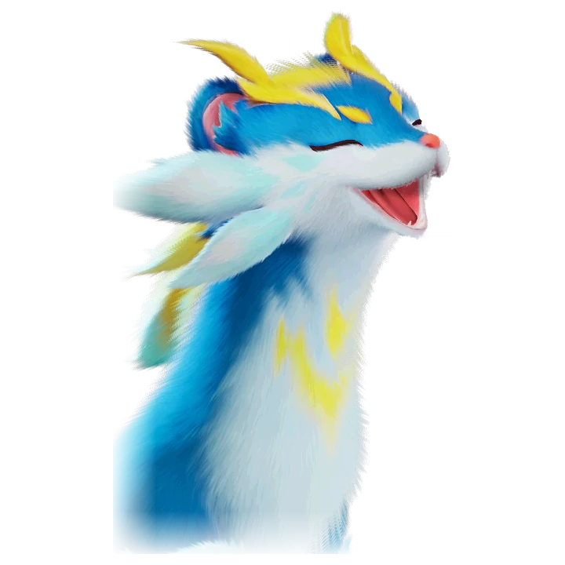

รายชื่อ Aniimo › #

Hoptail
#ธาตุสายฟ้า / ลมNovaDPS
ใช้ขนพิเศษดักจับอนุภาคประจุในอากาศเพื่อผลิตและกักเก็บไฟฟ้า
ดูรายละเอียดเต็ม ร่างพิเศษ และร่างเปล่งประกายค่าสถานะพื้นฐาน
| HP | 95 |
|---|---|
| ATK | 125 |
| P.DEF | 65 |
| M.DEF | 85 |
| REGEN | 85 |
| BREAK | 50 |
สกิล
| โจมตีปกติ | ATK ลม ใช้พลังแห่งลมโจมตีเป้าหมายในระยะใกล้ |
| สกิล 1 | Tail Flick Combo ลม กระโดดขึ้นแล้วกระแทกพื้นด้วยหางสปริง ทำดาเมจเป้าหมาย ใช้ติดกันได้ 3 ครั้ง ครั้งที่ 3 ใช้ [Elastic Burst] เพื่อเสริมพลังได้ ทำดาเมจเพิ่มเท่ากับพลัง 80% |
| สกิล 2 | Hop Dash สายฟ้า รวบรวมพลังสายฟ้าแล้วพุ่งเข้าหาเป้าหมาย กดค้างเพื่อชาร์จแล้วปล่อย เมื่อชาร์จเต็มระยะโจมตีกว้างขึ้น ดาเมจเพิ่ม 50% และติด [Paralysis] 6 วินาที ในสถานะ [Elastic Burst] ปล่อยโดยไม่ชาร์จก็ติด [Paralysis] ได้ |
| สกิล 3 | Spring Thrust ลม วาร์ปไปใกล้เป้าหมายแล้วแทงต่อเนื่อง ติด Damage Amp 40% นาน 20 วินาที ถ้าร่ายในสถานะ [Elastic Burst] Damage Amp เพิ่มอีก 40% |
| อัลติเมต | Bouncy ลม เด้งต่อเนื่องด้วยความเร็วสูง ทำดาเมจหลายครั้งต่อเป้าหมายในระยะ และได้ [Elastic Burst] ทันที |
Held Item ที่แนะนำ
- Ferocious Fang แอนีโมที่ติดตั้งจะได้รับพลังโจมตีเพิ่ม 0.7 หน่วยต่อเลเวล
งานใน Homeland
งานธาตุสายฟ้า Lv.2, งานธาตุลม Lv.3, งานช่าง Lv.3